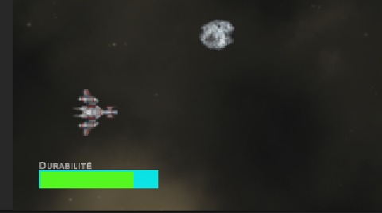

Éléments d'interface
Élément de compétence ciblé
00SW - 3 : Générer des représentations de mondes réels ou imaginaires 00SW - 4 : Programmer la logique du jeu ou de la simulation
Habiletés
- Choisir et utiliser les éléments graphiques pour l'affichage et la saisie
- Intégrer les images
- Programmer les comportements des éléments graphiques
- Utiliser les moteurs de jeu ou de simulation
Reprendre le projet
Le vaisseau vient d'être équipé d'un arme, les collisions influencent la durabilité du joeur et les astéroïdes sont générés automatiquement. Cependant le joueur ne reçoit aucune information et le jeu, bien que compréhensible, n'expose pas toutes les informations nécessaires.
Cette section entamme la création d'une interface utilisateur permettant d'exposer plus d'informations au sujet de l'environement créé pour le jeu. Plus spécifiquement une barre de durabilité (points de vie) pour le vaisseau.
Commencer par ouvrir le projet existant.
Le Canvas
Un GameObject de type Canvas doit être ajouté à la scène pour créer une interface utilisateur. Automatiquement, unity ajoute un second GameObject de type EventSystem qui sera utile pour les interactions avec un menu, une interface (comme un inventaire) et bien d'autres possibilités.
Le Canvas ajouté n'est pas réduit à la taille du jeu. Tout ce qui sera placé sur le canvas (les GameObjects enfants) seront rendus comme si les limites du canvas étaient les limites de la caméra.

Pour voir le résultat de la conception, il faut utiliser la vue Game. Si deux écrans sont à votre disposition, il est possible de glisser la vue Game dans la seconde fenêtre en utilisant sont onglet. Comme lorsque nous séparons deux fenêtres de navigateur (ex. : Chrome).
En pratique
Ajouter la jauge de durabilité
- Créer un GameObject vide en tant qu'enfant du GameObject Canvas
- Renommer le BarreDurabilite
- Cet objet est un conteneur pour les éléments d'interface de notre barre
- Placer BarreDurabilite en bas à gauche de l'écran et lui donner une largeur de 100, une hauteur de 30 au moyen de l'inspecteur.
- Ajouter un enfant de type UI > Image à BarreDurabilite.
- Renommer l'image Fond et donner lui la couleur de votre choix.
- Toujours dans l'inspecteur pour l'objet Fond, cliquer sur le carré d'alignement dans la section Rect Transform.
- Maintenir la touche ALT enfoncée et cliquer sur l'option Stretch pour la hauteur et la largeur.

- On obtient une image centrée et de la même grandeur que le GameObject.
- Retourner dans la sélection des alignement et choisir Stretch sur la largeur, sans touche de modification (PAS DE ALT!).
- Redimensionner le Fond pour qu'il occupe seulement la moitié de la hauteur.
- Répéter le processus pour ajouter l'Image enfant de Fond, qui s'apelle Barre (Couleure au choix).
- Ajuster la Barre pour qu'elle soit légèrement plus petite que le fond.
- Au moyen du logiciel de dession de votre choix, créer une image .png carrée remplie de la couleure blanche et l'importer dans le dossier Ressources du projet.
- Repérer et sélectionnier l'image dans l'explorateur de projet.
- L'inspecteur présente les options d'importation pour l'image, ajuster Texture Type pour qu'elle soit Sprite (2D & UI).
- Sélectionner la Barre et repérer la composante Image dans l'inspecteur.
- Assigner le carré blanc à la propriété Source Image.
- Ajuster les autre propriétés de la composante Image pour correspondre à l'illustration suivante
Programmer la mise à jour
- Créer le script UICtrl et l'ouvrir dans Visual Studio.
- Ajuster le script selon l'exemple. Si la nomenclature n'a pas été suivie, il faudra trouver le bon nom pour les éléments
using System.Linq;
using UnityEngine;
using UnityEngine.UI;
public class UICtrl : MonoBehaviour
{
// Accès direct aux propriétés de la barre et au script du joueur
public Image barreDurabilite;
public JoueurCtrlPhysx joueur;
/// <summary>
/// Méthode appelée lorsque le joueur reçoit des dégâts de durabilité
/// </summary>
public void majDurabilite()
{
float rapport = (float)joueur.durabilite / (float)joueur.maxDurabilite;
// La propriété fillAmount détermine le pourcentage de remplissage pour la barre de vie
// Calmp est utilisé pour s'assurer que la valeur est correctement bornée
barreDurabilite.fillAmount = Mathf.Clamp(rapport, 0, 1f);
}
}
- Assigner le script au GameObject vide BarreDurabilite
- Glisser la Barre dans la propriété Barre Durabilit du script. Unity sélectionne automatiquement la bonne composante pour la propriété de type Image.
- Répéter l'opération avec le Joueur pour la propriété joueur. Unity assocue automatiquement l'instance du script assigné à Joueur.
-
IMPORTANT : Le script utilise l'état actuel du joueur, il faut donc associer le script qui est déjà attaché à joueur et non pas le script de base JoueurCtrlPhysx.
-
Ajuster le script du Joueur
using System.Collections;
using System.Collections.Generic;
using UnityEngine;
using UnityEngine.InputSystem;
public class JoueurCtrlPhysx : MonoBehaviour
{
// Les attributs publiques nous donnent accès aux variables dans l'inspecteur directement
public InputAction MvmtAction;
public float vitesse = 10;
// Mécanique de durabilité (points de vie)
public int maxDurabilite = 100;
public int durabilite = 100;
// Lien avec l'interface utilisateur
public UICtrl ui;
// Attributs privés qui ne seront pas accessible dans l'inspecteur
// L'accès au RigidBody du GameObject est nécessaire pour implémenter le déplacement incluant la physique
Rigidbody2D rigidBody2d;
// La variable mouvement sera utilisée dans la boucle Update ET dans la boucle FixedUpdate
// Elle devient donc un attribut privé
Vector2 mouvement;
void Start()
{
// Nécessaire pour activer la détection des touches du clavier
MvmtAction.Enable();
// Nécessaire pour avoir accès à la composante RigidBody2D
rigidBody2d = GetComponent<Rigidbody2D>();
// Initialisation de la durabilité du joueur
durabilite = maxDurabilite;
}
void Update()
{
// Détection de l'état des interactions au clavier
// Cette partie reste dans la boucle update car elle n'est pas directement de la physique
mouvement = MvmtAction.ReadValue<Vector2>();
// Un déplacement dans la boucle update ne doit pas être lié au moteur de physique
// Le code commenté est remplacé par le déplacement du RigidBody
/*
Vector2 position = (Vector2)transform.position + mouvement * Time.deltaTime * vitesse;
transform.position = position;
*/
}
void FixedUpdate()
{
// Ce code remplace la méthode sans physique
// Le calcul de la position finale est le même mais il est basé sur le rigidBody2d
Vector2 position = (Vector2)rigidBody2d.position + mouvement * vitesse * Time.deltaTime;
// Il faut utiliser la méthode MovePosition au lieu d'accéder directement à la composante transform
rigidBody2d.MovePosition(position);
}
/// <summary>
/// Lorsque le joueur reçoit des dommages la durabilité est ajustée
/// et la méthode de mise à jour de l'interface est appelée
/// </summary>
/// <param name="modificateur"></param>
public void ChangerDurabilite(int modificateur)
{
durabilite = Mathf.Clamp(durabilite + modificateur, 0, maxDurabilite);
ui.majDurabilite();
}
}
- Dans l'inspecteur du Joueur associer le GameObject porteur du script UICtrl à la propriété UI du script.
- IMPORTANT : Encore une fois le script doit accéder aux propriétés d'un script en cours d'utilisation dans le jeu. Il faut absolument utiliser le GameObject porteur du script pour la propriété plutôt que le script directement.
Ajouter du texte
- Ajouter le Package TextMeshPro au projet.
- Ajouter un enfant au GameObject vide de type : UI > Text (TextMeshPro)
- Renommer le TitreBarreDurabilite.
- Au moyen de l'inspecteur :
- Changer le texte pour "Durabilité".
- Ajuster la position, la police et l'alignement du texte pour obtenir un résultat satisfaisant.
Tester le jeu
- Vérifier l'ajustement de la barre lorsque le joueur reçoit des dégâts
- Ajuster les propriétés pour obtenir un résultat satisfaisant.

Compléter la barre
- En se fiant aux techniques utilisées dans cette section, ajouter le nombre de points de durabilité restants à la barre de durabilité.